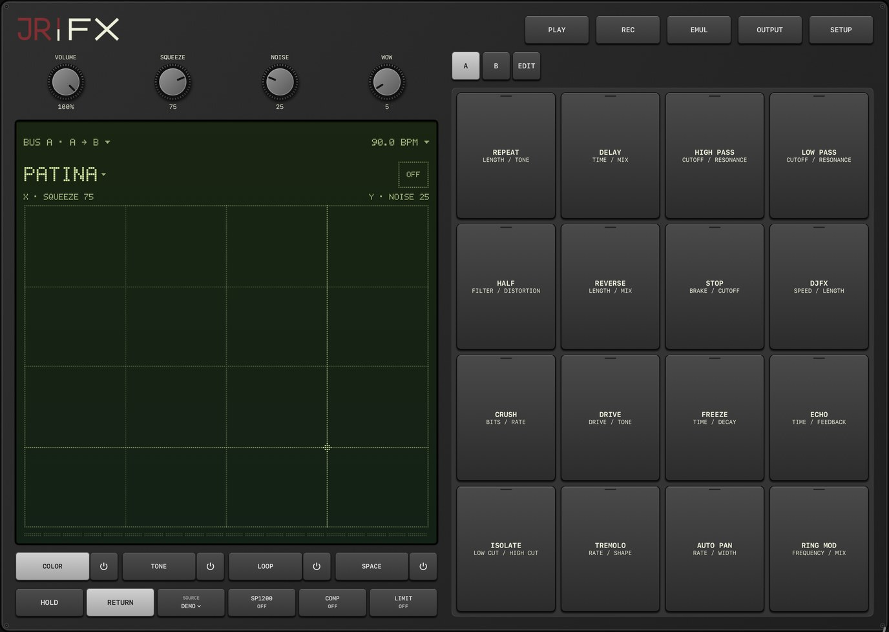
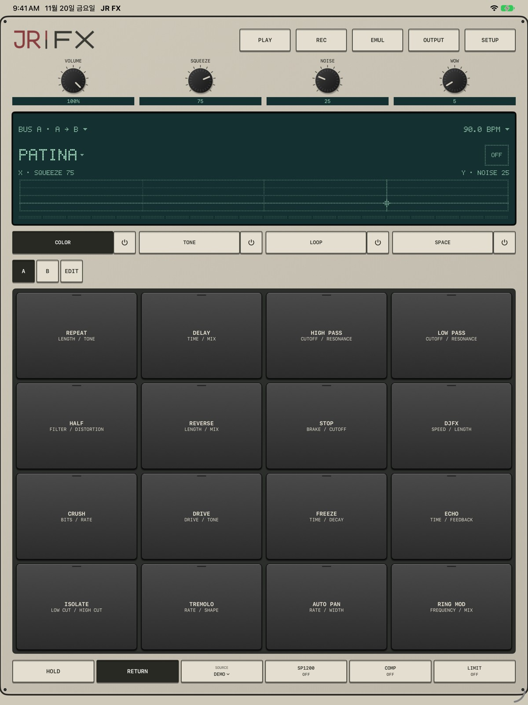
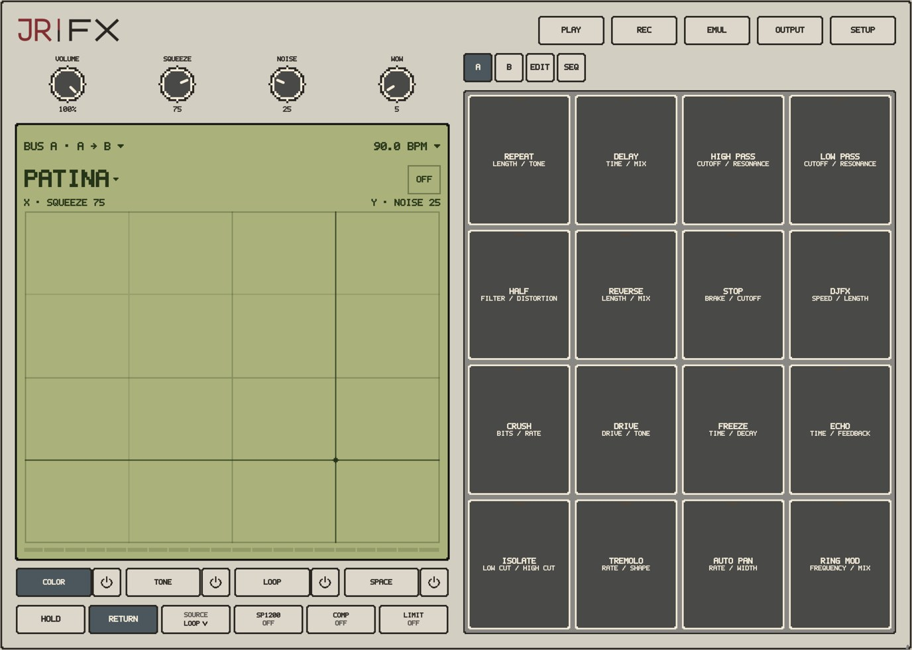
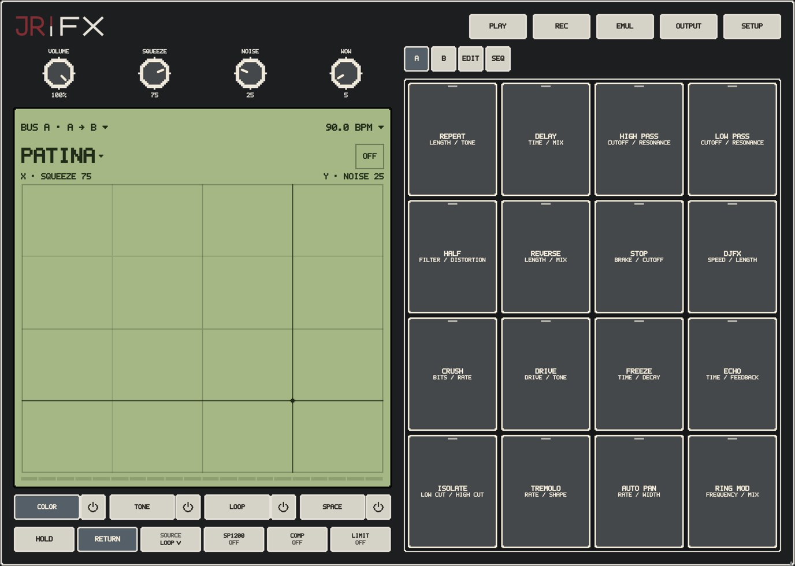
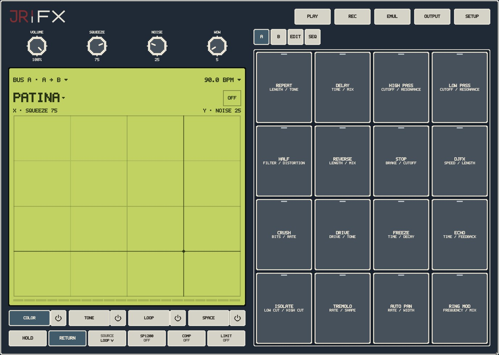

APP STORE LAUNCH IN PREPARATION · RELEASE DATE TO BE ANNOUNCED
ACTUAL APP SCREEN / MODERN BK
iPhone + iPadAUv3 audio effectiOS / iPadOS 17 or laterOne purchase · All released features
THE FOUR EFFECT CATEGORIES
Color the sound. Shape the performance.
Start with the role you want an effect to play. Each category offers a choice of effect types with three focused controls, inside JR FX’s bus and performance-pad workflow.
COLOR
Choose the texture.
Compression, saturation and conversion-style character change the density and edge of the signal.
PATINA
SQUEEZE, NOISE and WOW combine compression, surface texture and pitch motion. Keep the three ingredients separate, or use them as one finish.
Drive families
TAPE, CONSOLE, TUBE and PURE DRIVE offer different harmonic colors. SOFT CLIP rounds transients; DISTORT adds a stronger overdriven edge.
Digital and metallic color
CRUSH changes bits and rate. RING MOD creates sidebands; WAVEFOLD bends the waveform into new harmonic shapes.
Try it when a clean loop needs more weight, texture or edge.
All COLOR choices
PATINA · TAPE · CONSOLE · TUBE · PURE DRIVE · SOFT CLIP · DISTORT · CRUSH · RING MOD · WAVEFOLD
TONE
Choose what comes forward.
Filters and frequency shaping decide which parts of the sound lead, recede or move.
ISOLATOR and EQUALIZER
Shape low, mid and high ranges. ISOLATOR gives broad kill/boost gestures; EQUALIZER offers a different three-band tonal balance.
Filter families
LP, HP and BP focus on different regions. LADDER LP / HP / BP add a resonant ladder character with cutoff, resonance and drive controls.
Movement and focus
SUPER FILTER follows the input envelope. PHASER moves notches through the sound; RESONATOR emphasizes tuned harmonic bands.
Try it to clear space, soften a bright loop or turn a filter move into part of the phrase.
All TONE choices
ISOLATOR · LP · HP · BP · LADDER LP · LADDER HP · LADDER BP · SUPER FILTER · PHASER · EQUALIZER · RESONATOR
LOOP
Play with the phrase.
Capture, repeat and reshape incoming audio, then use rhythmic motion to make it perform.
Capture and repeat
BEAT REPEAT captures a fragment. DJFX LOOP combines a short loop with signed playback speed, from reverse through forward.
Reshape time and pitch
REVERSE, HALF TIME and TAPE STOP change how a phrase unfolds. PITCH SHIFT adds transposition with its own window and mix controls.
Rhythmic motion
TREMOLO pulses the level; AUTO PAN moves it across stereo. SLICER creates a clocked rhythmic gate.
Try it for fills, momentary repeats, transitions and hands-on changes to a running loop.
All LOOP choices
BEAT REPEAT · DJFX LOOP · REVERSE · HALF TIME · TAPE STOP · TREMOLO · AUTO PAN · PITCH SHIFT · SLICER
SPACE
Choose where it goes.
Repeats, reverberation and modulated delays give the sound depth and a sense of motion.
Clean or colored repeats
ECHO and DELAY cover direct repeating textures. DUB ECHO adds saturated, filtered feedback.
Stereo and tape-style movement
PING PONG throws repeats between channels; ORBIT adds modulation. SPACE ECHO uses a three-head tape-echo-inspired layout.
Go deeper into PATINA below, then use the optional EMUL stage for a final sampler character. The manual lists the exact control names for each effect.
PATINA / 303-INSPIRED VINYL CHARACTER
Glue. Grain. A little movement.
Some effects become part of the way you make a beat. PATINA brings together responsive compression, a living surface texture and gentle pitch motion—three separately controlled ingredients in one playable finish.
One shared input gain, with the effect’s natural level change retained. Start with Dry, then isolate compression, surface texture or pitch motion before hearing the full combination.
Ready · Dry · same input gain
48 kHz / 24-bit Amen Break · same input gain · natural output levels.
The SP-303 arrived in 2001. Its Vinyl Sim combined compression, record noise and wow/flutter, putting record-like texture under three hands-on controls. Release announcement · Original manual
THE SP WORKFLOW
Make the effect part of the beat.
Across later SP generations, processing and resampling helped turn effects into a beatmaking language: shape the loop, print its character, then build on the result. Vinyl simulation became part of that vocabulary. Roland’s sampler history
TODAY / JR FX
The inspiration, in your signal chain.
PATINA is JR’s independent interpretation of that three-part feel. SQUEEZE, NOISE and WOW sit inside JR FX’s bus workflow, alongside filtering, spatial effects, automation and recording.
THREE INGREDIENTS / SEPARATE CONTROL
Choose what your loop needs.
Select a control to explore its role.
COMPRESSION / DENSITY
Bring the pieces together.
SQUEEZE combines pressure, recovery and transient shaping in one performance control. Left and right channels share gain reduction, keeping compression coherent across the stereo signal.
The surface texture enters the same compression path as the music, so it can breathe with the beat. Keep NOISE at zero when you want the glue without the record bed.
SURFACE / TEXTURE
A surface that keeps changing.
PATINA generates its texture in real time: shaped body, low rumble, air and short crackle events. It is procedural texture rather than a repeating record-noise audio loop.
The noise is centered, and its response shares the music’s compressor. Bring it in as a quiet background or use it as a more audible rhythmic layer. SQUEEZE and WOW remain separately adjustable.
PITCH / MOVEMENT
Movement with a mechanical feel.
Slow rotational wow, faster flutter and gradual drift combine in a moving playback head. WOW changes the depth of that pitch motion, from a subtle instability to a more worn sound.
The processed path uses one moving head. Pitch motion is created directly rather than by combining delayed and dry copies inside that stage. Keep WOW at zero for a steady pitch.
Exploring SQUEEZE.
Why it fits JR FX.
Separate the ingredients. Use compression with no surface noise, add texture without strong pitch motion, or combine all three.
Put the finish where it belongs. Use PATINA on a bus, combine it with TONE, LOOP and SPACE, and compare the result in the wider effects chain.
Keep the performance. Automate supported controls in an AUv3 host, or record your standalone performance when the loop feels right.
PATINA is a JR implementation inspired by the SP-303 Vinyl Sim concept, with JR tuning and procedural texture. It is not a licensed Roland/BOSS algorithm or a claim of identical hardware behavior. SP-303, Roland and BOSS identify the historical references; no endorsement is implied.
Swipe or scroll through actual iPad screens. Tap an image to inspect it.
The main performance surface / MODERN BKShape the output character / MODERN BKOptional output dynamics / MODERN BK
CHOOSE YOUR SURFACE
Same sound. Your style.
Open SETUP → INFO → SKIN. Modern BK is the default; your saved choice stays selected. Appearance only — your sound and controls stay the same.

Modern BK · Dark hardware. Smooth lettering.

VINTAGE · Ivory rack. Teal display. Clear lettering. Open full screen

JR XL · Warm ivory. Bold pixels.

JR BK · Charcoal with ivory pixel keys.

JR BL · Deep blue with a lime display.
1 / 5
EMUL / SAMPLER CHARACTER
Five sampler colors. One familiar break.
Compare the same clean pre-firmware Amen Break source through JR FX’s sampler models. The engine’s level changes are retained. Learn more about the sampler models in the dedicated JR EMUL app.
Ready · Dry · same input gain
48 kHz / 24-bit Amen Break · same input gain · natural output levels.
Source and comparison settings
Amen Break · the same 48 kHz / 24-bit stereo pre-firmware source, repeated twice. One shared input gain for every render; no per-model loudness normalization or limiter. Dry may sound quieter: the effect’s natural gain is intentionally retained. Source recording: The Winstons, “Amen, Brother” (1969); drums by Gregory C. Coleman.
Then US$4.99. One paid purchase, with all released features and included skins. No subscription, advertising or feature-unlock purchases. Local pricing may differ.